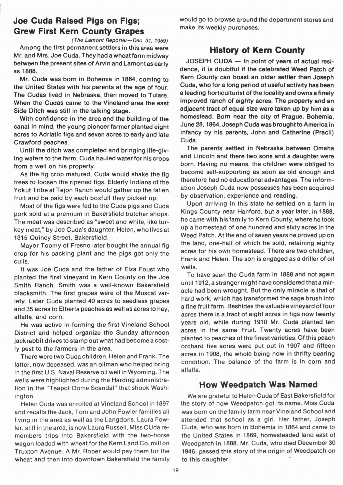

The book · The Family of Peter Kastl
Page 19 Joe Cuda Raised Pigs on Figs; Grew First Kern County Grapes


Transcription
Joe Cuda Raised Pigs on Figs; Grew First Kern County Grapes
(The Lamont Reporter—Dec. 31, 1959)
Among the first permanent settlers in this area were Mr. and Mrs. Joe Cuda. They had a wheat farm midway between the present sites of Arvin and Lamont as early as 1888.
Mr. Cuda was born in Bohemia in 1864, coming to the United States with his parents at the age of four. The Cudas lived in Nebraska, then moved to Tulare. When the Cudas came to the Vineland area the east Side Ditch was still in the talking stage.
With confidence in the area and the building of the canal in mind, the young pioneer farmer planted eight acres to Adriatic figs and seven acres to early and late Crawford peaches.
Until the ditch was completed and bringing life-giving waters to the farm, Cuda hauled water for his crops from a well on his property.
As the fig crop matured, Cuda would shake the fig trees to loosen the ripened figs. Elderly Indians of the Yokut Tribe at Tejon Ranch would gather up the fallen fruit and be paid by each boxfull they picked up.
Most of the figs were fed to the Cuda pigs and Cuda pork sold at a premium in Bakersfield butcher shops. The meat was described as "sweet and white, like turkey meat," by Joe Cuda's daughter, Helen, who lives at 1315 Quincy Street, Bakersfield.
Mayor Toomy of Fresno later bought the annual fig crop for his packing plant and the pigs got only the culls.
It was Joe Cuda and the father of Elza Foust who planted the first vineyard in Kern County on the Joe Smith Ranch. Smith was a well-known Bakersfield blacksmith. The first grapes were of the Muscat variety. Later Cuda planted 40 acres to seedless grapes and 35 acres to Elberta peaches as well as acres to hay, alfalfa, and corn.
He was active in forming the first Vineland School District and helped organize the Sunday afternoon jackrabbit drives to stamp out what had become a costly pest to the farmers in the area.
There were two Cuda children, Helen and Frank. The latter, now deceased, was an oilman who helped bring in the first U.S. Naval Reserve oil well in Wyoming. The wells were highlighted during the Harding administration in the "Teapot Dome Scandal" that shook Washington.
Helen Cuda was enrolled at Vineland School in 1897 and recalls the Jack, Tom and John Fowler families all living in the area as well as the Langdons. Laura Fowler, still in the area, is now Laura Russell. Miss CUda [sic] remembers trips into Bakersfield with the two-horse wagon loaded with wheat for the Kern Land Co. mill on Truxton Avenue. A Mr. Roper would pay them for the wheat and then into downtown Bakersfield the family would go to browse around the department stores and make its weekly purchases.
History of Kern County
JOSEPH CUDA — In point of years of actual residence, it is doubtful if the celebrated Weed Patch of Kern County can boast an older settler than Joseph Cuda, who for a long period of useful activity has been a leading horticulturist of the locality and owns a finely improved ranch of eighty acres. The property and an adjacent tract of equal size were taken up by him as a homestead. Born near the city of Prague, Bohemia, June 28, 1864, Joseph Cuda was brought to America in infancy by his parents, John and Catherine (Pracil) Cuda.
The parents settled in Nebraska between Omaha and Lincoln and there two sons and a daughter were born. Having no means, the children were obliged to become self-supporting as soon as old enough and therefore had no educational advantages. The information Joseph Cuda now possesses has been acquired by observation, experience and reading.
Upon arriving in this state he settled on a farm in Kings County near Hanford, but a year later, in 1888, he came with his family to Kern County, where he took up a homestead of one hundred and sixty acres in the Weed Patch. At the end of seven years he proved up on the land, one-half of which he sold, retaining eighty acres for his own homestead. There are two children, Frank and Helen. The son is engaged as a driller of oil wells.
To have seen the Cuda farm in 1888 and not again until 1912, a stranger might have considered that a miracle had been wrought. But the only miracle is that of hard work, which has transformed the sage brush into a fine fruit farm. Beshides [sic] the valuable vineyard of four acres there is a tract of eight acres in figs now twenty years old, while during 1910 Mr. Cuda planted ten acres in the same Fruit. Twenty acres have been planted to peaches of the finest varieties. Of this peach orchard five acres were put out in 1907 and fifteen acres in 1908, the whole being now in thrifty bearing condition. The balance of the farm is in corn and alfalfa.
How Weedpatch Was Named
We are grateful to Helen Cuda of East Bakersfield for the story of how Weedpatch got its name. Miss Cuda was born on the family farm near Vineland School and attended that school as a girl. Her father, Joseph Cuda, who was born in Bohemia in 1864 and came to the United States in 1869, homesteaded land east of Weedpatch in 1888. Mr. Cuda, who died December 30 1946, passed this story of the origin of Weedpatch on to this daughter.
People from the line of descent on this page
- Joseph Cuda 1864–1946
- Frank Thomas Cuda 1888–1943
- Helen Cuda b. 1891
Transcriber’s notes
Two-column page of reprinted articles about Joseph Cuda. The 'How Weedpatch Was Named' section ends a paragraph at the bottom of the right column ('to this daughter.') and the story continues with a new paragraph at the top of the next page. Print typos preserved: 'Beshides', 'Miss CUda', 'boxfull'.